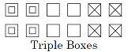
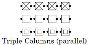
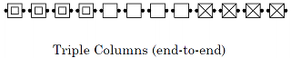
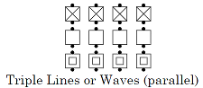
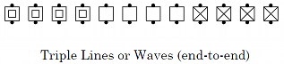
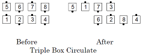
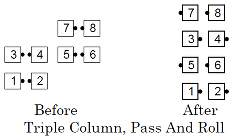
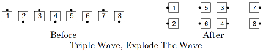

This concept establishes three groups of 4 dancers each; the dancers in each group are in either a box, column, line, or wave. Since there are 12 spots and only 8 actual dancers, 4 of the spots will be vacant (occupied by phantom dancers). Calls are executed by working with your group of 4. Examples of the spots and who works with whom:








Common Triple Box calls are Circulate, Counter Rotate, Right and Left Thru, Scoot Back, Shakedown, Touch 1/4, Walk & Dodge, and Wheel Thru. Common Triple Wave/Line/Column calls are Swing Thru, Mix, Switch the Wave, Pass and Roll, Touch 1/4, and Dixie Style to a Wave.